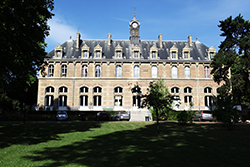

Schools
-
2016 - 2017UCSC
 UC Santa Cruz is a public university like no other in California. I am spending here my last academic semester in the Computer Science department as an exchange student.With my studies in the CS deparment of UCSC, I aim to specialize in the Robotics applicative field by learning about Artificial Intelligence and Machine Learning. I also take the opportunity to learn about specific topics that could somewhat be related to Robotics, about general culture in Computer Science and about working in an international environment with people from different cultures with different skills.
UC Santa Cruz is a public university like no other in California. I am spending here my last academic semester in the Computer Science department as an exchange student.With my studies in the CS deparment of UCSC, I aim to specialize in the Robotics applicative field by learning about Artificial Intelligence and Machine Learning. I also take the opportunity to learn about specific topics that could somewhat be related to Robotics, about general culture in Computer Science and about working in an international environment with people from different cultures with different skills. -
2014 - 2017ENSEIRB-MATMECA
 ENSEIRB-MATMECA is a public French Grande Ecole training engineers to take up the major challenges of the 21st century. I enrolled here in the Computer Science department.The main objectives of the Computer Science department are to teach theoretical and technical foundations of computing, thus enabling its students to take part in project management and IT in the corporate world. At the end of their studies, the students dispose all the necessary skills for Software Development and have basis about some specific topics. I chose to study Information Theory, Distributed Systems, Security of Information Systems, Quantum Information and Robotics.
ENSEIRB-MATMECA is a public French Grande Ecole training engineers to take up the major challenges of the 21st century. I enrolled here in the Computer Science department.The main objectives of the Computer Science department are to teach theoretical and technical foundations of computing, thus enabling its students to take part in project management and IT in the corporate world. At the end of their studies, the students dispose all the necessary skills for Software Development and have basis about some specific topics. I chose to study Information Theory, Distributed Systems, Security of Information Systems, Quantum Information and Robotics. -
2012 - 2014Lycée LakanalThe Lycée Lakanal is a French Higher School Preparatory Classes where I spent two very intensive years studying principally Mathematics and Physics.The Preparatory Schools exist only in France and prepare their student to pass national contest to enter the very selective public Engineering Schools. The courses offered are very general but mainly focusing on Mathematics, Physics and Engineering Science. At the end of this school, I passed several national contests, I was ranked 954/5000 for the CCP and I was eligible for the Concours Mines-Ponts.
Projects
-
Kaggle Competition Mar 2017
Mar 2017
At the end of the Machine Learning class at UCSC, I was asked to apply the knowledge I had acquired on a "real-world" project. Thus, I had to find and define an experimental project that would complete the weekly ones that we had to do during the quarter. I chose to tackle a Kaggle Competition about image recognition as my internship in Japan rose my interest in Computer Vision.Subject
I chose the famous application project about supervised binary classification which objective is to determine pictures representing cats from pictures representing dogs. From logistic, SVM and Neural Network that I studied in class, I wanted to find which classification method would produce the best outcome and optimize it to solve this specific problem. My final release didn't get a good accuracy though I learned a lot from this hard first ML project, especially about Tensorflow Library and Convolutional Neural Networks. Thanks to my work in this class, the professor offered me to make a PhD with her. I am now even more interested in ML and I want to improve my skills in this field: it will begin with my 6-month internship at Mappy in Paris.
Useful links: -
Fault Tolerant KVS Jan 2016 - Mar 2017
Jan 2016 - Mar 2017
My Distributed Systems class at UCSC had a running project along the quarter which goal was to implement a distributed fault tolerant and scalable Key-Value Store in teams of two. We had to submit one step of the implementation every two weeks.Subject
The idea of this project was to use Docker to simulate a network of servers that would act like a distributed system that stores values associated to unique keys. To do so, my partner and I decided to implement a consistent hash ring where the data would be replicated on fixed-sized partitions. The addition or deletion of one node would trigger a reorganization of the partitions so that the ring keeps equilibrated. Finally, our system worked fairly well except on one point (on which we would have liked to spend more time) that is the read-repair technique that would have allowed the system to be eventually consistent after a partition recovery.
Useful links: -
AI Problems Sept 2016 - Mar 2017
Sept 2016 - Mar 2017
The two AI classes that I took at UCSC made me practice basic to sophisticated techniques to implement in Python.Subject
The two classes began with the basic search algorithms that I already knew before getting into specific topics of my interest. Thus, I was introduced to Markov Decision Processes, Bayesian Networks, up to an introduction to Machine Learning (Reinforcement Learning, Linear Regression, SVM and Neural Networks). More specificly in the game field, I discovered path finding using meshes, Monte Carlo Tree Search, Behavior Trees and Genetic Algorithms. During the three months of each class, I had to put in application these theories on weekly projects.
Useful links: -
Camera Pose Estimation Jun 2016 - Sept 2016
Jun 2016 - Sept 2016
Following the program at ENSEIRB-MATMECA, I spent a 3-month internship in the HyperVision Research Laboratory of Professor Saito Hideo at Keio University, Tokyo. The main objective of this internship was to discover the environment of a research laboratory while working on a specific subject about Computer Vision and Augmented-Mixed Reality.Subject
Some applications of augmented or mixed reality find their basis in a network of cameras. The relative position estimation of the captured images is therefore needed to compute these kinds of algorithms. The main idea which solves this problem is to determine some keypoints on each frame and to match the same keypoints on the different cameras' images. Then, the epipolar geometry theory is able to give the transformation between the different frames, which consists in a rotation and a translation. However, if the cameras' vision do not have any shared area or cannot find the same keypoints on their frames, this extrinsic calibration becomes impossible with these parameters. Shogo Miyata explains in his paper how the use of an additional omnidirectional camera can accurately solve this issue at a low price. My work consisted in improving Miyata's work, implementing the theory and adding Automatic Feature Detection to the final program.
Useful links: -
Portfolio Jul 2016 - Aug 2016
Jul 2016 - Aug 2016
In order to obtain my ENSEIRB-MATMECA diploma, a 6-month internship in a company is required at the end of the studies. Afterwards, I will be looking for a job. Thus, I wanted to present my working profile with an original media that fits who I am, and a portfolio was the ideal solution.Subject
The objective was to show my working profile with a design that I like and some of my drawings because it describes well who I am. The website media gives me the opportunity to give more information about my education and the projects I did than a CV. Working on this website was also the opportunity to learn more about some web languages and technologies. For instance, I chose to use the Flask framework in Python, to add some effects with jQuery, to add the Google reCaptcha to the contact form etc.
Useful links: -
DominOS Apr 2016 - May 2016
Apr 2016 - May 2016
To complete the Operating System lectures I followed at ENSEIRB-MATMECA, this project had the goal to make me manipulate system calls and understand a file system by using fuse.Subject
The goal was to develop a file system allowing to organize files (such as images or musics) by tags. Using fuse, we could mount this file system on a specific directory that contains a .tags hidden file containing the database matching the files to their tags. In the virtual file system, all the files are accessible in the root folder and every directory is a tag containing all the files that have this tag and all the directories corresponding to the other tags of these files. For example, if the image toto.jpg has the tags foo and bar, then in the root folder you find the file toto.jpg and the folders foo and bar. In the foo folder you will find the file toto.jpg and the folder bar ... The usual bash commands allow the user to modify the tree structure of the system. Moreover, several extensions could be implemented. In particular, I chose to provide a new system call handled with ioctl to print in the standard output the tags of the specified file. I also added the detection of the modifications in the source folder in order to adapt the virtual file system in real time (this uses inotify and needed to be used with a fork in the program).
Useful links: -
NewTorrent Apr 2016 - May 2016
Apr 2016 - May 2016
To complete the Network lectures at ENSEIRB-MATMECA, the Computer Science students were asked to program a centralized Peer2Peer system in C and an oriented object language. My group and I decided to implement the Tracker in C and the Peers in C++.Subject
In addition to the Peers, a Tracker known by all the clients had to be implemented. Following a simple protocol, the Tracker can help the Peers to find seeds and leeches in the network. Since a Peer knows where to download its missing file segments, it follows another simple protocole between Peers. Thus, this project focused on training us about using Sockets and Threads, following a strict protocole, manipulating a file system and working with a group of six members.
Useful links: -
C Exercises Online Oct 2015 - May 2016
Oct 2015 - May 2016
This project's purpose was to make my group understand the full process of a Software Engineering project. During a bit more than six months, we experienced the SCRUM method from the conception to the realization of a real client's project.Subject
Our client was a Computer Science Professor wanting to provide his students with an online platform in order to practice what they learn about the C programming language by doing some exercises. The teacher had already implemented the structure and content of the website though it was only a presentation of the exercises instructions. Therefore, he wanted to add some features to improve his website. The main goal was to allow the user to solve the exercises online instead of on his own computer so that he can focuse only on the programming language. We also had to improve the design of the website, to clear the code for future developers, to make the website administration easier, write good documentation and make presentations about our work. In order to achieve our objectives we had to understand the previous code, the web languages we did not know and how an exercise could be compiled and run on the server by using Docker.
Useful links: -
Re7 Nov 2015 - Dec 2015
Nov 2015 - Dec 2015
This project was one of the suggested projects to Computer Science students at ENSEIRB-MATMECA to evaluate them about their knowledge on DBMS. In addition, the user interface was evaluated for the first time in this school so it was the opportuniy to learn this topic by ourselves and have fun about it.Subject
In this Database Management System project, we are invited to create a database to manage a recipe site for ENSEIRB-MATMECA students. The objective is to implement, on a practical case, the concepts and methods seen in the DBMS module. The project starts with data modeling and results in the creation of a relational database and the implementation of a certain number of transactions (consultations, updates, ranking, etc.). My group and I decided to offer an entire recipe website like the ones you can find recently on the web. We used the Flask microframework and the MySQL DBMS.
Useful links: -
DJ Compile Nov 2015 - Dec 2015
Nov 2015 - Dec 2015
In order to practice what we had learned about Compilation in our second year at the ENSEIRB-MATMECA, the Computer Science students were invited to create a more or less complicated compiler. The goal of this project was to provide a new language very close to C that could be translated by our program into LLVM and then compiled with clang. My partner and I decided to use the tool PLY in Python to make our compiler.Subject
The DJ_Compil project is an attempt to create a compiler for a C-like programming language supporting automatic vectorization and parallelization for operations over arrays, like map() and reduce(). Pyvain and I decided to use a test-driven development method to realize this goal as everything is very dependent in Lex and Yacc and, therefore, needs to be well specified and organized. Our final work only consists in the basis of the dj language. It provides the lexical and syntax analysis and some useful functions such as map() and reduce(). The vectorization and parallelization were not implemented. If you are interested, please feel free to contribute and improve this project!
Useful links: -
FTP and SFTP Data Collection Jul 2015 - Aug 2015
Jul 2015 - Aug 2015
At the end of my first year at ENSEIRB-MATMECA, I did an internship in the IT office of AS24, a subsidiary of TOTAL. This internship had the objective to make me discover the "working life" though I took the opportunity to work directly about programming.Subject
My work in AS24 consisted in different tasks. First, I had to collect and send data from automatas around the world through FTP and SFTP with a C# program that I realized from scratch using Visual Studio. Then, I needed to process these data in order to input them into the company Oracle database using PL/SQL. This internship made me discover the IT environment in a quite big company. Moreover I learned about multithreading, scheduling, database and the .NET framework.
Useful links: -
Literal Expression Calculation Feb 2015 - May 2015
Feb 2015 - May 2015
During my first year at ENSEIRB-MATMECA, I followed a class of functional programming based on Scheme (one of the Lisp dialects). This project was the opportunity to test a functional approach for the first time and to do a project about Mathematics instead of a game.Subject
The purpose of this project was to implement the symbolic differentiation and the simplification of mathematical expressions in a functional language. By consequence, we had to find a convenient structure to describe an expression and to think about recursive functional methods to implement. It was a very interesting challenge as we always used imperative programming languages before.
Useful links: -
MiniGames Nov 2014 - Jun 2015
Nov 2014 - Jun 2015
During my first year in the Bordeaux Engineering School ENSEIRB-MATMECA, I learned the basics of programming. In order to practice, I was asked to realise some games in C but I also made some games in C# to prepare my internship and get used to OOP.Subject
I implemented in team projects some simple games in C in order to practice the data structures and all the features of the language. Thus, I created a computer version of the boardgames Quoridor and Penguins. I also worked on a strategy to the game PlanetWars which was a challenge proposed by Google some years before. To get prepared for my internship, I implemented from scratch copies of the games FlappyBird and 2048 in C# using Visual Studio.
Useful links: -
PageRank Study Sept 2013 - Apr 2014
Sept 2013 - Apr 2014
One of the tests of the Concours aux Grandes Ecoles in France is the presentation of a specific subject related to an annual topic. This year the shared topic was transfers and exchanges; I chose to work about the PageRank, the ranking criteria invented by the founders of Google at its beginning.Subject
This work consisted mainly in collecting and understanding research papers and scientific documents describing the subject and the mathematics theories about it. With the help of my teacher, I was able to understand the important points and to implement this PageRank myself with Maple. Finally, I applied this algorithm to the graph of the Parisian subway to elect the most important stations in the French capital.
Useful links:


 Copyright © 2021, Florian Le Vern
Copyright © 2021, Florian Le Vern